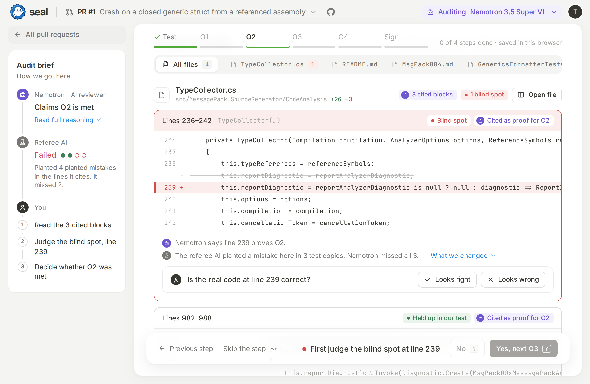
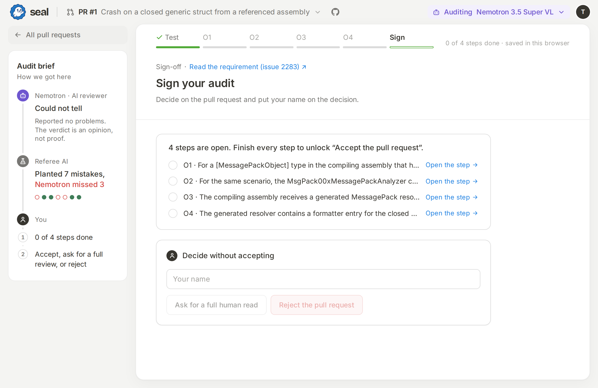

Real run on MessagePack-CSharp. Reviewer: Nemotron 3.5 Super VL, in a fresh session, not told it was a test.
Our answer
From requirements to measurable objectivesTesting humans and AI with planted mutationsTrust is measured, not assumed
An untested approval is a rubber stamp.
How it works
Cite.Break.Re-review.
Point 2
01
The reviewer cites its proof
Uncited claims are guesses.
bug
omission
harmless
02
We break exactly those lines
A different model plants one break per change.
caught
missed
left alone
03
The AI reviewer should notice
Assess the understanding of the model.
The result is not a score. It is the list of lines a human must verify.
The sign-off / working prototype
The human reads only where the AI proved blind.
Sent straight to line 239. The reviewer missed a planted break there.
A verdict on every marked spot. Accept stays locked until then.
The signer is tested too. Some sign-offs show a planted bug. Approve it and it is recorded; nothing is approved.
Reviewer Controls


Evidence / Tieto's sample changes
Both said “meets the requirement”. One caught 6 of 6 breaks, the other 2.
Pull request #3 the same 7 planted defects
Gemini 4 Hydrogenmeets requirement
6 of 6 caught
Nemotron 3.5 Super VLmeets requirement
2 of 6 caught
caughtmissednot scored
All changes tested so far catch rate, 95% interval
Gemini 4 Hydrogen17 of 20 64% to 95%
Nemotron 3.5 Super VL6 of 13 23% to 71%
0%50%100%
95% intervalshare caught
Runs saved 14 November on 3 of the 4 sample changes. Both reviewers saw identical breaks, written by a third model. A break is not scored when the reviewer gave no usable answer or had already flagged that spot in the real change. The breaks are not yet compiled and run, and counts are small, so we report ranges and never a single score.
Measuring trust / in a real team
Trust becomes a track record.
Reviewer Controlscaught 4 of 7 planted defects1 line needs a human: TypeCollector.cs:239
A gate on every pull request
Each change gets a status and a to-do list for its owner. Not a grade.
Bugs caught
3 of 7
Omissions caught
3 of 6
False alarms
1 of 6
A record for every reviewer
Every planted edit is a labelled test. Rates build up per reviewer, code area and kind of defect.
Low risksign the card
Mediumread marked lines
High riskfull read
Depth follows risk
More planted edits where it matters: 10 of 10 caught supports “at least 74%”, 30 of 30 “at least 90%”.
NextBuild and run every planted copy / start the check from the pull request / finish all four sample changes
seal
Junction 2026 / Tieto / Earned Trust in AI Code
Every claim cites its evidence.
Every AI reviewer is tested on the change in front of it.